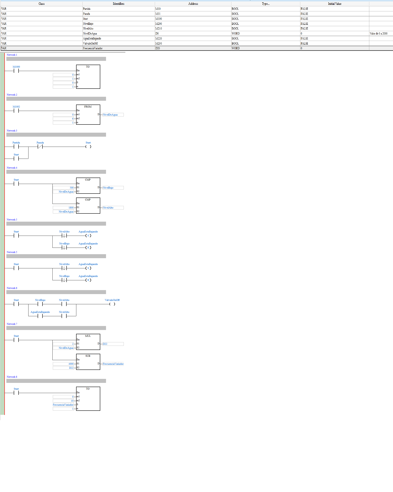
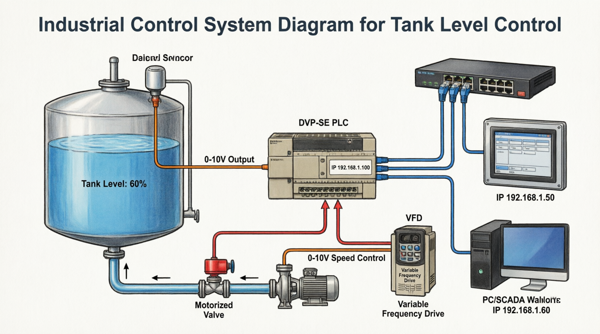

Sistema de control de nivel y flujo en tanque de proceso con adquisición de variables analógicas.
Requisitos Funcionales del Programa PLC
1. Salidas retenidas (latch/unlatch):
Bomba y válvula de control activadas/desactivadas por pulsadores START/STOP con mantenimiento de estado.
2. Temporizador (TON/TOF):
Control de tiempo de llenado con reinicio automático al completar ciclo o presionar RESET.
3. Contador ascendente:
Conteo de ciclos completados con visualización de conteo parcial y total.
4. Conversión entero → flotante (rutina aislada):
Subrutina independiente que convierta valor entero (lectura ADC) a formato flotante IEEE-754.
5. Variables analógicas:
Lectura de entrada analógica (0-2000) y escritura a salida analógica (0-4000) SIN ESCALAR EN EL PLC.
⚠️ Importante: El escalado de variables analógicas (4-20mA → 0-100%, 0-10V → 0-50°C, etc.) se realizará EXCLUSIVAMENTE en InfileLink, no en el PLC.

🔄Figura 3: Diagrama de flujo Insertar imagen 3.PNG aquí
'">
FASE 1
Configuración de Red Ethernet con DCSOFT
💡 Recomendación: Utilizar DCSOFT (Delta Configuration Soft) en lugar de ISPSoft para configurar parámetros Ethernet. DCSOFT es la herramienta especializada de Delta para configuración de hardware y comunicaciones.
1.1 Instalación y Conexión Inicial
Instalar DCSOFT desde el sitio web de Delta o CD de software
Conectar el PLC Delta DVP-SE al PC mediante cable USB o Ethernet
Abrir DCSOFT y seleccionar "Communication Setting"
Configurar conexión USB o Ethernet temporal para detección del PLC
1.2 Configuración IP con DCSOFT
En DCSOFT, ir a "PLC Configuration" → "Ethernet Port Setting"
Seleccionar el PLC detectado en la lista
Habilitar "Use Fixed IP Address" (IP estática)
Configurar los siguientes parámetros:
IP Address: 192.168.1.100
Subnet Mask: 255.255.255.0
Default Gateway: 192.168.1.1 (opcional)
Modbus TCP Port: 502
Modbus TCP Server: Habilitado ✓
1.3 Descargar Configuración al PLC
Hacer clic en "Download to PLC" o presionar F2
Confirmar la descarga de parámetros
Esperar mensaje de "Download Successful"
Reiniciar el PLC (ciclo de energía o comando RESET)
La nueva configuración IP entrará en vigor después del reinicio

⚙️Figura 4: Configuración Ethernet en DCSOFT Insertar imagen 4.PNG aquí
'">
1.4 Configuración de Red del PC
Panel de Control → Centro de redes → Cambiar configuración del adaptador
Propiedades de Ethernet → IPv4
IP: 192.168.1.50 (misma subred, diferente host)
Máscara: 255.255.255.0
1.5 Verificación de Conexión
Abre CMD y prueba conectividad:
C:\> ping 192.168.1.100
Respuesta esperada:
Respuesta desde 192.168.1.100: bytes=32 tiempo<1ms TTL=128
✅ Si hay respuesta, la configuración Ethernet con DCSOFT fue exitosa
⚠️ Nota: Si el PLC ya tiene una IP configurada y no responde, usar DCSOFT en modo USB para cambiar la IP, o usar la función "Search PLC" de DCSOFT para detectar automáticamente el dispositivo en la red.
FASE 2
Configuración KEPServerEX Modbus TCP/IP
2.1 Crear Canal Modbus TCP
Nuevo proyecto → Add Channel
Driver: Modbus TCP/IP
Nombre: Channel_Delta_Ethernet
2.2 Configurar Dispositivo
Add Device en el canal creado
Nombre: PLC_Delta_SE
ID de dispositivo: 1 (Unit ID Modbus)
Hostname/IP: 192.168.1.100
Puerto: 502
Protocolo: Modbus TCP
Request Timeout: 1000 ms
2.3 Crear Tags
Crear las siguientes variables bajo el dispositivo:
Tag
Tipo
Dirección
Descripción
PLC.START
Boolean
00001
Pulsador marcha
PLC.STOP
Boolean
00002
Pulsador parada
PLC.PUMP
Boolean
00101
Salida bomba
PLC.ANALOG_IN_RAW
Word
40001
Entrada analógica (0-32000)
PLC.ANALOG_OUT_RAW
Word
40002
Salida analógica (0-32000)
PLC.TIMER_STATUS
Boolean
T0.DN
Estado temporizador
PLC.COUNTER_TOTAL
DWord
C0.ACC
Conteo total
PLC.FLOAT_VALUE
Float
D10-D11
Valor flotante
FASE 3
Escalado de Variables Analógicas en InfileLink
Fundamento Teórico
El PLC lee valores brutos del ADC (0-32000 para 4-20mA o 0-10V). En lugar de escalar en el PLC, usaremos fórmulas matemáticas en InfileLink.
⚠️ Importante: El PLC solo envía/recibe valores RAW (0-32000). Todo el escalado se hace en InfileLink.
FASE 3 - CONT
Implementación del Escalado en InfileLink
Paso 1: Crear Tags Intermedios
En KEPServerEX, además de los tags RAW, crea tags virtuales para valores escalados:
SCADA.NIVEL_PORCENTAJE (Float)
SCADA.TEMPERATURA (Float)
SCADA.FLUJO (Float)
Paso 2: Configurar Escalado en InfileLink
InfileLink permite aplicar fórmulas directamente en las propiedades del tag o mediante scripts:
// Método 1: Fórmula directa en propiedad del tag// En InfileLink, ve a Properties del tag → Expression
Tag: Nivel_Tanque
Expression: (PLC.ANALOG_IN_RAW - 6400) * 100 / (32000 - 6400)
DataType: Float
Format: "0.00 %"
// Método 2: Script global de escalado// En InfileLink, crea un script que se ejecute cada ciclofunctionEscalarVariables() {
// Escalar entrada analógica a porcentajevar raw = PLC.ANALOG_IN_RAW;
var nivel = ((raw - 6400) * 100) / (32000 - 6400);
// Limitar entre 0 y 100if (nivel < 0) nivel = 0;
if (nivel > 100) nivel = 100;
SCADA.NIVEL_PORCENTAJE = nivel;
// Escalar a temperatura (ejemplo)var temp = (raw * 50) / 32000;
SCADA.TEMPERATURA = temp;
}
// Ejecutar cada 1000msSetTimer("EscalarVariables", 1000);
Paso 3: Escalado Inverso (Salida Analógica)
Para escribir en salida analógica, debes hacer el proceso inverso:
// Si el operador escribe 75% en SCADA// Convertir a valor RAW (0-32000)functionEscribirSalida(porcentaje) {
// Fórmula inversa:// Raw = (EngValue - EngMin) × (RawMax - RawMin) / (EngMax - EngMin) + RawMinvar rawValue = ((porcentaje - 0) * (32000 - 6400)) / (100 - 0) + 6400;
// Escribir al PLCPLC.ANALOG_OUT_RAW = Math.round(rawValue);
}
✅ Ventaja: El PLC mantiene valores RAW puros, facilitando diagnóstico y cambio de rangos sin reprogramar.
Configuración de IP Ethernet en parámetros del PLC (usando DCSOFT)
Habilitación de Modbus TCP Server
Lógica de salidas retenidas (SET/RESET)
Temporizadores TON/TOF
Contadores ascendentes
Rutina aislada de conversión entero→flotante
NO escalar variables analógicas (solo leer/escribir RAW)
Estructura Sugerida:
// Programa Principal - ISPSoftNETWORK 1: "Lectura de entrada analógica RAW"LDM8000// Siempre ONMOVD0D100// D0 = Canal 0 ADC (0-32000)// D100 se mapea a Modbus 40001NETWORK 2: "Escritura de salida analógica RAW"LDM8000MOVD200D10// D200 = Valor desde SCADA// D10 = Canal 0 DAC (0-32000)NETWORK 3: "Conversión Entero a Flotante (aislada)"LDM100// Trigger de conversiónFLTD100D10// D100 entero → D10-D11 flotante
💾Insertar aquí la captura del programa del PLC
Imagen 7.PNG - Programa en ISPSoft
Validación Final
Verificar ping al PLC: ping 192.168.1.100
Verificar comunicación en KEPServer (Quality = Good)
Forzar valor en entrada analógica y verificar RAW en InfileLink
Verificar que el escalado funcione correctamente
Escribir desde slider y verificar salida analógica en PLC
✅ Criterio de éxito: Al variar la entrada analógica de 4mA a 20mA, InfileLink debe mostrar 0% a 100% en tiempo real.
Entregables y Evaluación
Criterio
Peso
Configuración correcta de Ethernet con DCSOFT y Modbus TCP/IP en KEPServerEX
15%
Tags creados y funcionales (I/O discretas, analógicas RAW, timer, counter)
15%
Programa PLC con lógica solicitada (SIN escalado analógico)
20%
Escalado de variables analógicas implementado en InfileLink (fórmulas/código)
25%
Pantalla InfileLink minimalista, funcional y con escalado operativo
15%
Conversión entero→flotante y validación de comunicación Ethernet
10%
Entregables
Proyecto PLC (.isp) con configuración Ethernet
Archivo de configuración DCSOFT exportado
Archivo KEPServerEX exportado (.ksx)
Proyecto InfileLink con scripts de escalado
Reporte con:
Capturas de configuración IP en DCSOFT
Fórmulas de escalado utilizadas
Código InfileLink implementado
Pruebas de comunicación y escalado en tiempo real
✅ Validación final: Demostrar que al cambiar la entrada analógica física (o simulada), InfileLink muestra el valor escalado correctamente SIN intervención del PLC en el cálculo.